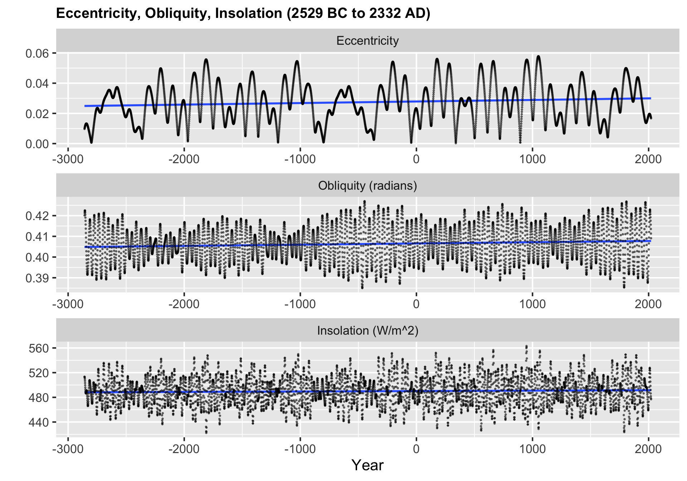

Chapter 4 Missing values
There is no missing values found from our data source. Here we use steak survey dataset for analysis.
4.1 Analysis
We first load our steak survey data which has 550 observation with 14 columns. (First column is the Respondent ID so we set it as row names)
## [1] 550 144.1.1 Missing counts by column
## hhold_income steak_prep educ region female age smoke gamble
## 120 118 38 38 36 36 13 13
## skydiving speed cheated steak alcohol lottery_a
## 12 11 11 11 9 4In the survey a lot of respondent did not provide their income and steak preference. The missing values from household income may stem from people’s privacy concern. As for the steak preference column, some people may not be steak eater and therefore cannot provide a informative response.
4.1.2 Missing counts by row
## 3237565956 3234910805 3234906252 3234850595 3234835856 3234781338 3234775647 3234774090 3234770881
## 13 13 13 13 13 13 13 13 13
## 3234929241 3234925077 3234924367 3234900937 3234880918 3234832610 3234831966 3234820423 3234937003
## 6 6 6 6 6 6 6 6 5
## 3234879461 3234870917 3234862159 3234860927 3234856048 3234822135 3234821322 3234817478 3234816059
## 5 5 5 5 5 5 5 5 5
## 3234815497 3234815420 3234810955 3234808857 3234805086 3234793110 3234788829 3234787811 3234773000
## 5 5 5 5 5 5 5 5 5
## 3234843266 3234928903 3234928649 3234896271 3234891191 3234889143 3234888966 3234887552 3234864240
## 3 2 2 2 2 2 2 2 2
## 3234858015 3234858003 3234855441 3234848544 3234839930 3234835004 3234834693 3234827533 3234821230
## 2 2 2 2 2 2 2 2 2
## 3234808864 3234802862 3234796655 3234796064 3234782874 3234775250 3234768724 3234768304 3234955097
## 2 2 2 2 2 2 2 2 1
## 3234940805 3234938004 3234928339 3234927933 3234926887 3234925465 3234923731 3234921008 3234919737
## 1 1 1 1 1 1 1 1 1
## 3234915627 3234911072 3234908558 3234907424 3234906064 3234904710 3234900347 3234898344 3234898162
## 1 1 1 1 1 1 1 1 1
## 3234897200 3234897017 3234896919 3234896091 3234895751 3234894723 3234893756 3234890660 3234889471
## 1 1 1 1 1 1 1 1 1
## 3234887493 3234885891 3234885046 3234884670 3234883481 3234883277 3234879259 3234879079 3234877910
## 1 1 1 1 1 1 1 1 1
## 3234877192 3234876635 3234875056 3234874621 3234872191 3234871337 3234869539 3234865587 3234862267
## 1 1 1 1 1 1 1 1 1
## 3234861177 3234861097 3234860125 3234859369 3234858907 3234858733 3234857573 3234857554 3234855951
## 1 1 1 1 1 1 1 1 1
## 3234855298 3234853178 3234852897 3234852790 3234852426 3234851715 3234850633 3234850216 3234850078
## 1 1 1 1 1 1 1 1 1
## 3234849594 3234847799 3234847028 3234846522 3234844345 3234842004 3234841439 3234840992 3234840809
## 1 1 1 1 1 1 1 1 1
## 3234840089 3234838884 3234838236 3234837423 3234835549 3234835436 3234834533 3234834323 3234832790
## 1 1 1 1 1 1 1 1 1
## 3234831618 3234829821 3234828861 3234828284 3234827738 3234825540 3234823512 3234822396 3234821616
## 1 1 1 1 1 1 1 1 1
## 3234820905 3234819954 3234818156 3234818093 3234817193 3234816985 3234816931 3234814864 3234814651
## 1 1 1 1 1 1 1 1 1
## 3234814222 3234813881 3234813021 3234812630 3234811984 3234811715 3234807193 3234806468 3234804543
## 1 1 1 1 1 1 1 1 1
## 3234803528 3234801990 3234799491 3234798959 3234797602 3234797221 3234796052 3234794335 3234793325
## 1 1 1 1 1 1 1 1 1
## 3234792668 3234791290 3234791190 3234789421 3234789415 3234789316 3234787056 3234786242 3234784794
## 1 1 1 1 1 1 1 1 1
## 3234782381 3234781892 3234781837 3234780977 3234780238 3234779739 3234778457 3234778259 3234778061
## 1 1 1 1 1 1 1 1 1
## 3234777834 3234775831 3234775020 3234774532 3234774379 3234772571 3234771796 3234770752 3234766450
## 1 1 1 1 1 1 1 1 1
## 3234766329 3234766097 3234765572 3234765401 3234764154 3234764079 3234763650 3234763171 3234762715
## 1 1 1 1 1 1 1 1 1
## 3234761718 3234760930 3234760413
## 1 1 1Based on the missing counts by row, we can see that most of the respondents answer all the questions. Only a few refuse to answer most of the questions. And there are about 20% of respondent has one response missing. It may be the result of missing value from column ‘steak_prep’ and ‘hhold_income’
4.1.3 Row / column missing patterns from heatmap
## NOTE: In the following pairs of variables, the missingness pattern of the second is a subset of the first.
## Please verify whether they are in fact logically distinct variables.
## [,1] [,2]
## [1,] "smoke" "alcohol" From the plot above we can see some strong pattern correltion between varialbe ‘steak’ and the missingness of variable ‘steak_prep’. There is no description for the column ‘steak’, based on this corrlation, we inspect it as an indicator on whether the respondent is a steak eater or not.
From the plot above we can see some strong pattern correltion between varialbe ‘steak’ and the missingness of variable ‘steak_prep’. There is no description for the column ‘steak’, based on this corrlation, we inspect it as an indicator on whether the respondent is a steak eater or not.
4.1.4 Missing Partern Investigation
 There are total 22 missing patterns found in the steak survey dataset.
- We see that most of the observation is complete.
- The two most common missing pattern are caused by the missing of steak preference and househould income. We can see that there is no strong correlation between the missingness of ‘steak preference’ and ‘household income’.
- The sixth missing pattern is quite intersting, a few people only respond the question ‘lotter_a’. From the description of the data, we suspect that it is probably the first question in the survey, those respondents probably get inpatient and abondon the survey.
- For the seventh missing pattern, the respondents only finish first part of the survey, those question that may contain their personal information are missing, those respondents may hold some privacy concern on this survey.
4.2 Summary
Based on the above analysis, we should probably discard datapoints from those ‘impatient’ respondent and they contain no information. Moreover, those respondents who refuse to answer any personal questions may also be discarded, as they contribute nothing to our analysis of steak preference. For the missing value from steak_prep, they can probably be considered as a new class, which is ‘unsure/no preference’. And for the household income column, the majority of the data are still present, and they might be a informative column to predict the steak preference, we may use some technique to impute the values.